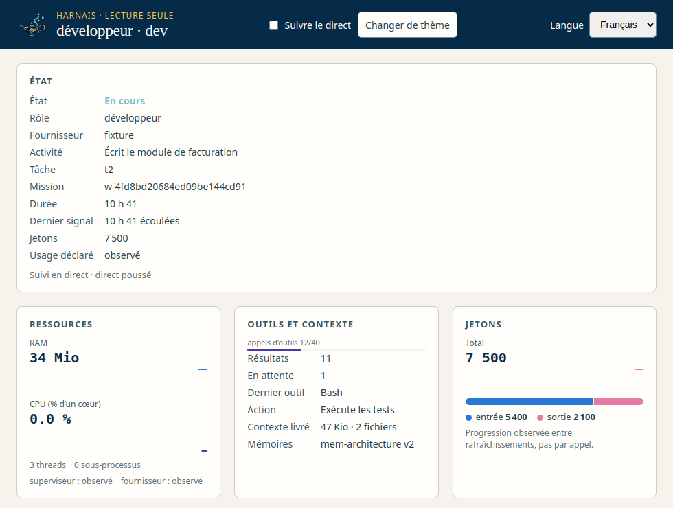

<section id="harnais" data-transition="fade" style="background:#F6F4EE;color:#14213D;font-family:'IBM Plex Sans', Arial, sans-serif;padding:128px;display:grid;grid-template-columns:1fr 560px;gap:64px;align-items:center">
<div style="background:#E9E4D8;border-radius:16px;padding:24px;display:flex;justify-content:center">

</div>
<div style="display:flex;flex-direction:column;gap:32px">
<h2 style="font-size:72px;font-weight:600;line-height:1.1">La fenêtre harnais</h2>
<ul style="font-size:32px;color:#4A5568;line-height:1.5">
<li>Terminal enregistré (xterm)</li>
<li>Journal filtrable, copie</li>
<li>RAM, CPU, outils, mémoires</li>
<li>Frise d’activité, dernière erreur</li>
</ul>
<p style="font-size:24px;color:#4A5568">Une seule connexion poussée partagée par toutes les fenêtres du navigateur.</p>
</div>
<aside>Le harnais suit un agent par curseurs. Lecture seule : aucune saisie, aucun arrêt. Un flux SSE unique par profil de navigateur évite la limite de 6 connexions de Chrome.</aside>
</section>
